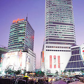

|
|  |
1905年“誕生”的東大門市場，至今仍然是首爾最具代表性的市場之一。被指定為服裝批發特別商街之後，發展速度更加驚人，20多處大型建築內的購物中心先後拔地而起。東大門的物品應有盡有，從各種小的流行裝飾品到男裝、女裝、鞋類，而且價格比其他地方都要便宜很多，因此這媮`是簇擁著來自地方城市的零售商和外國的商人和游客們。 |
| 以零售為主的第一購物區 |
|
東大門市場以中間的馬路為界限，分為鬥山塔（Doosan
Tower）所在的第一區和東大門運動場周圍的第二區（參照下面地圖）。
兼有批發和零售功能的第一區大型購物中心，實際上以零售為主，因此一般顧客和游客們經常光顧這堙A為此特別準備了換錢窗口、多種外語導購員等便利服務。為了方便一般顧客們購物，將營業時間定為上午10：30到次日淩 |
| 晨5：00。不亞于百貨商場的設施條件、輕鬆悅耳的音樂聲吸引了大批10-20歲的年輕人群。此外，一區的各大購物商場傍晚7-8點期間，在1層門口舉辦年輕顧客們直接參與的歌舞比賽等多種有獎活動，使這媗亃o更加熱鬧非凡。第一區主要有斗山塔、米利來、Freya城、HellowapM等。 |
| 以批發為主的第二購物區 |
|
| 東大門運動場一側的大型購物區也兼顧批發和零售功能，但這堨H批發銷售為主，因此這堸荇a的營業時間為傍晚8點到次日早晨8點或下午5點。
到了深夜和淩晨，這堣浀茪韖掑捘棜n熱鬧，但因為以批發為主，所以很難找到試衣室。另外要注意，這堣@般不給事後退換，所以購買時要仔細挑選。這一區主要有Disigner’s
Club、米利來Valley、 Nuzzon
、廣熙服飾大廈、第一 |
| 和平、興仁市場等，其中第一和平和興仁市場因樸素而大方的特點受到30-4-0歲顧客的喜愛，而Disigner’s
Club、米利來Valley、 Nuzzon 和廣熙服飾大?的顧客相對要年輕一些。 |
| 體育用品店 |
| 東大門區除東大門市場外，還有人們熟悉的東大門運動場和東大門棒球賽場，而在這兩個運動場的一層均設有各種體育用品商店。 |
|